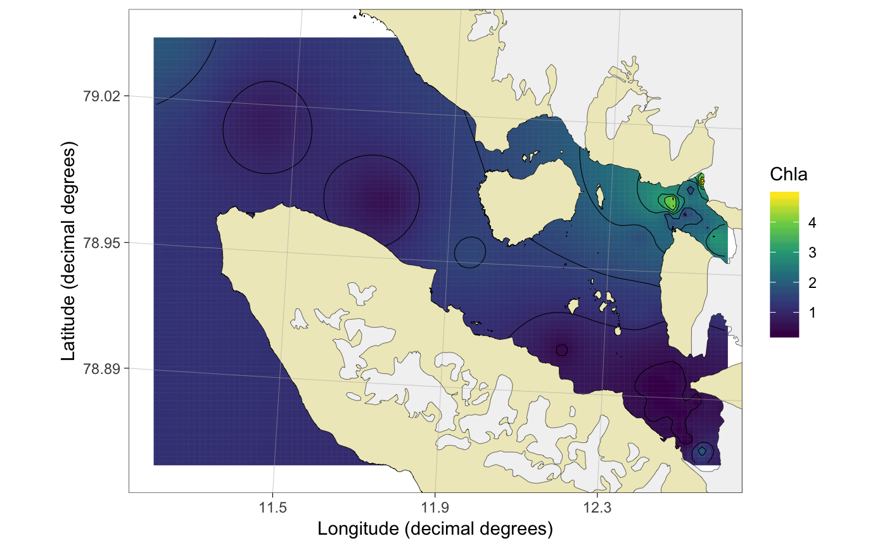

Interpolates a 2D surface from a data.frame of observations for plotting. Currenly uses the krige function.
interpolate(df, value, Subset = NULL, coords = c("lon.utm", "lat.utm"), station.col = "Station", strata.col = "From", name.col = NULL, id.cols = NULL, bin.method = "average", int.method = "krige", unit = NULL, shear = NULL, n.tile = 100, accuracy = 100)
| df | dataframe containing required information |
|---|---|
| value | Name of the value column to be used for interpolation |
| Subset | A subset argument as a name (i.e. with " "). |
| coords | A vector of column names for x (longitude) and y (latitude) coordinates, respectively. It is recommended to use UTM coordinates instead of decimal degrees. See |
| station.col | Name of the column that specifies unique stations (i.e. spatial points). Required. |
| strata.col | Columns that specify the sampling depth. Should be in order: 1) sample from ("From"), 2) sample to ("To"). "To" can be NA. |
| name.col | Column giving sample names. Not required. |
| id.cols | Identification columns that should be preserved together with value, From, To and UTM coodinate columns |
| bin.method | Method for binning data, if there are several observations for each spatial point. Either "average" for average values or "integrate" for vertical trapezoidal integration using the |
| int.method | Method for interpolation. Currently only |
| unit | The unit for |
| shear | Map tilting. Either NULL for non-tilted maps or a shear matrix, f.ex (matrix(c(2,1.2,0,1),2,2)) to shear the interpolation. |
| n.tile | Number of horizontal and vertical tiles. Default is 100 resulting to 10000 tiles. |
| accuracy | Number to which the extent of the interpolation should be rounded. |
Returns a spatInt object which is a list
The function removes missing values (NAs) from value column. Both strata.cols have to be specified. If the sample was from one depth, place that depth to "From" column and leave "To" column empty (NA).
A word of warning about bin.method = "integrate": this functionality works only if samples have been taken consistently at same depths. In other cases, it is recommended to use bin.method = "average", although the user should be careful in comparing samples taken from different depths in general. The unit for integrated value is [amount]/m2, if the original value was [amount]/m3.
data(chlorophyll) ## load an example dataset x <- interpolate(chlorophyll, Subset = "From <= 10", value = "Chla") ## Interpolate#> [inverse distance weighted interpolation]plot(x, type = "kongsfjorden") ## Plot